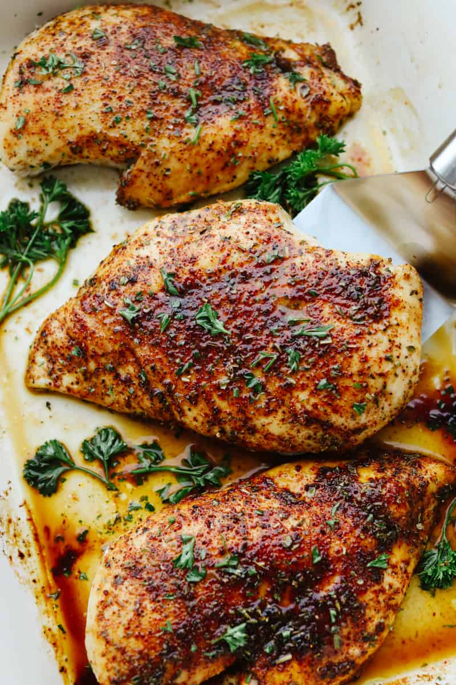

Home
Recipes
Blog
About
Login
Main Cuisines
General Recipes
Baked Chicken

Ingredients
Chicken pieces
Olive oil
Garlic powder
Paprika
Salt
Pepper
Dried herbs (thyme, rosemary, or oregano)
Steps
Preheat the oven to 400°F (200°C).
Place chicken pieces on a baking sheet.
Drizzle with olive oil and season with garlic powder, paprika, salt, pepper, and dried herbs.
Bake for 25-30 minutes or until the chicken is cooked through and golden brown.
Serve hot and enjoy!
Vegetable Stir-Fry
Ingredients
Mixed vegetables (broccoli, bell peppers, carrots, snap peas)
Soy sauce
Garlic
Ginger
Sesame oil
Cornstarch
Vegetable oil
Steps
Heat vegetable oil in a wok or skillet over high heat.
Add minced garlic and ginger, stir-fry for 1-2 minutes.
Add mixed vegetables and stir-fry until they are tender-crisp.
In a bowl, mix soy sauce, sesame oil, and cornstarch. Pour over the vegetables and toss to coat.
Cook for an additional 2-3 minutes until the sauce thickens.
Serve over rice or noodles.
Caprese Salad
Ingredients
Tomatoes
Fresh mozzarella
Fresh basil leaves
Extra virgin olive oil
Balsamic glaze
Salt
Pepper
Steps
Slice tomatoes and fresh mozzarella into 1/4-inch thick slices.
Arrange the tomato and mozzarella slices on a serving platter, alternating and overlapping.
Tuck fresh basil leaves between the tomato and mozzarella slices.
Drizzle with extra virgin olive oil and balsamic glaze.
Season with salt and pepper to taste.
Serve as a refreshing salad or appetizer.
.png)